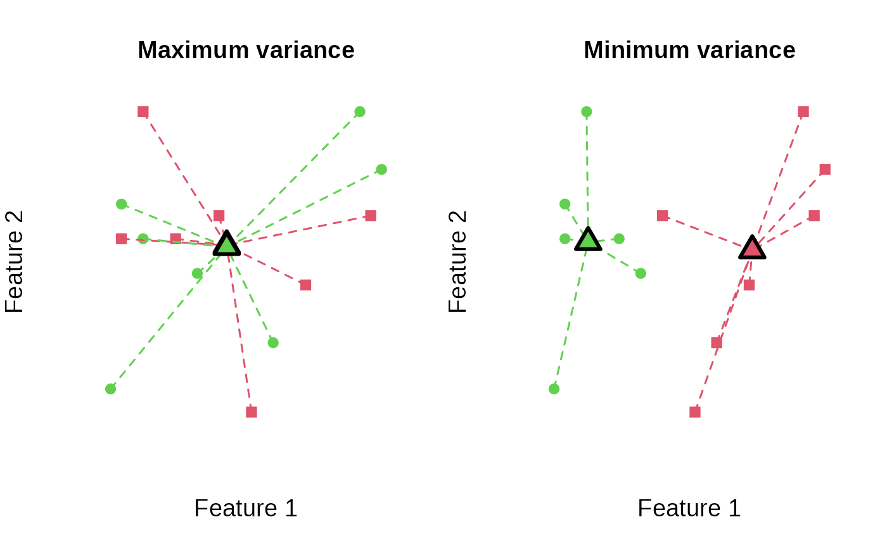

Generate all partitions of same cardinality
generate_partitions(N, K, generate_permutations = FALSE)
Arguments
| N | The total N. |
|---|---|
| K | How many partitions |
| generate_permutations | If TRUE, all permutations are returned, resulting in duplicate partitions. |
Value
A list of all partitions (or permutations if
generate_permutations is TRUE).
Details
In principle, anticlustering can be solved to optimality by generating all possible partitions of N items into K groups. The example code below illustrates how to do this. However, this approach only works for small N because the number of partitions grows exponentially with N.
The partition c(1, 2, 2, 1)
is the same as the partition c(2, 1, 1, 2) but they correspond
to different permutations of the elements [1, 1, 2, 2]. If the argument
generate_permutations is TRUE, all permutations are
returned. To solve balanced anticlustering exactly, it is sufficient
to inspect all partitions while ignoring duplicated permutations.
References
Papenberg, M., & Klau, G. W. (2020). Using anticlustering to partition data sets into equivalent parts. Psychological Methods. Advance Online Publication. https://doi.org/10.1037/met0000301.
Author
Martin Papenberg martin.papenberg@hhu.de
Examples
## Generate all partitions to solve k-means anticlustering ## to optimality. N <- 14 K <- 2 features <- matrix(sample(N * 2, replace = TRUE), ncol = 2) partitions <- generate_partitions(N, K) length(partitions) # number of possible partitions#> [1] 1716## Create an objective function that takes the partition ## as first argument (then, we can use sapply to compute ## the objective for each partition) var_obj <- function(clusters, features) { variance_objective(features, clusters) } all_objectives <- sapply( partitions, FUN = var_obj, features = features ) ## Check out distribution of the objective over all partitions: hist(all_objectives) # many large, few low objectives## Get best k-means anticlustering objective: best_obj <- max(all_objectives) ## It is possible that there are multiple best solutions: sum(all_objectives == best_obj)#> [1] 1## Select one best partition: best_anticlustering <- partitions[all_objectives == best_obj][[1]] ## Look at mean for each partition: by(features, best_anticlustering, function(x) round(colMeans(x), 2))#> INDICES: 1 #> V1 V2 #> 12.43 15.43 #> ------------------------------------------------------------ #> INDICES: 2 #> V1 V2 #> 11.43 15.43## Get best k-means clustering objective: min_obj <- min(all_objectives) sum(all_objectives == min_obj)#> [1] 1## Select one best partition: best_clustering <- partitions[all_objectives == min_obj][[1]] ## Plot minimum and maximum objectives: user_par <- par("mfrow") par(mfrow = c(1, 2)) plot_clusters( features, best_anticlustering, illustrate_variance = TRUE, main = "Maximum variance" ) plot_clusters( features, best_clustering, illustrate_variance = TRUE, main = "Minimum variance" )par(mfrow = user_par)